Recall that computer graphics is the use of computers to create images. It is thus important to understand what an image is.
When we talk about an image, two facts should come into mind. The first is that an image is a two-dimensional thing. It has width and height but no depth. It can be printed on a flat piece of paper and displayed on a flat screen. The second thing is that it is made out of colors. We will discuss what a color actually is in the next section. For now, just assume that colors can be represented by some computer data.
There are two kinds of images we will deal with in this book: continuous images and raster images.
A continuous image is a mathematical object rather than a concrete piece of data that be stored and transmitted. Precisely, it is a function that assigns every point on the 2D plane a color. Let $\mathcal{C}$ denote the set of colors. A continuous image is a function $$ p: \mathbb{R}^2 \rightarrow \mathcal{C} $$ where $p$ stands for "picture." Here, $$p(x,y)$$ denotes the color of the point $(x,y)$ where $x$ and $y$ are real numbers. By this definition, it is impossible for us to view a continuous image as whole because the 2D plane is infinitely large. The best we can do is to visualize some parts of it. Moreover, we cannot hope to store a continuous image in a computer because there are just too much data because the 2D plane contain infinitely many points.
Another feature of a continuous image is that it has
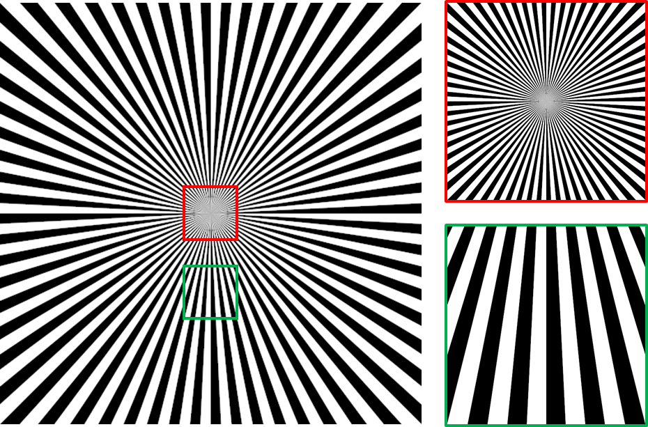
Figure 2.1 A continous image where we divide the plane into 128 radial sectors and color them black and white. When we zoom into the image, the details will all be present. The lines will say sharp no matter how far we go down.
On the other hand, a raster image is a concrete piece of data has finite size. It takes the shape of a rectangular grid of small elements called picture elements or pixels, where each pixel has a single color. A pixel is generally depicted as a small square.
Let us say that a raster image has $H$ pixels in the horizontal direction and $W$ pixels in the veritcal direction. It can be represented by a two-dimensional array $P$, each of whose cells store a color. Mathematically, we can think of $P$ as a function from grid coordinates to colors: $$P: \{0, 1, \dotsc, W-1\} \times \{0, 1, \dotsc, H-1\} \rightarrow \mathcal{C}.$$ We will denote the color of the pixel on the Row $i$ and Column $j$ with $$P[i,j]$$ instead of $P(i,j)$ in order to make make the notation for raster images different from that of a continous image. Clearly, if a color be represented with $c$ bytes (which is typically 3 or 4), then the raster image can be represented with $W \times H \times c$ bytes of data.
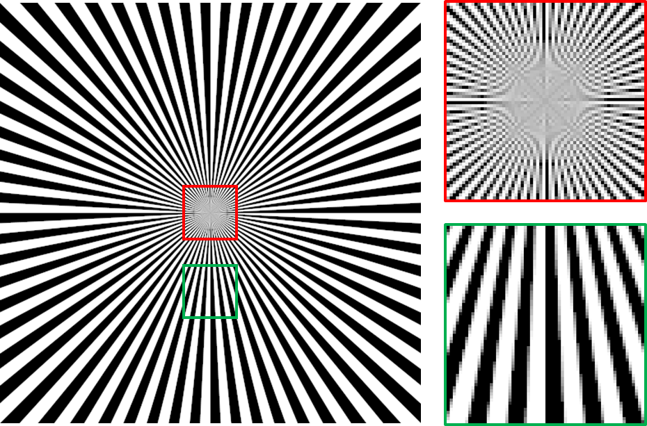
Figure 2.2 A raster image obtained by rendering the continuous image in Figure 2.1 at the resolution of $512 \times 512$. When we zoom into the image, we can see that the details are lost. We can see individual pixels, depicted as small squares of a single color.
Most of the time, a computer graphics program would produce one or more raster images.1 So, why do we talk about continuous images at all when we cannot hope to produce one with a computer?
The reason is that, in 3DCG, all raster images that we produce come from some continuous images. Recall from the last chapter that we create a 3D-looking image by creating a virtual scene and then taking a picture of that scene with a virtual camera. The virual scene lives in an imaginary 3D world, and our virtual camera is also located in it. We can think that the camera is observing a small portion of an image plane. In case the camera is a pinhole camera, each point on the image plane has a color, and it is defined by the light that travels along the ray between the point and the camera's focal point. So, we now have a continuous image that is implicitly defined by the scene and the camera. We must then convert this portion of the continous image to a raster image in order to produce a usable output.
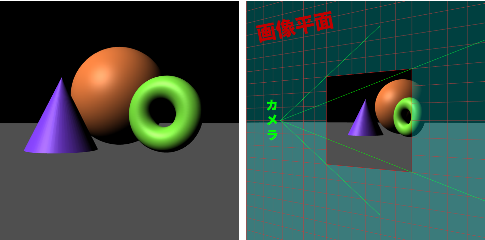
Figure 2.3 The raster image on the left is created by "taking a photograph" of a virtual 3D scene with 3 solid shapes sitting on a flat rectangle. The situation is depicted on the right where a virtual camera is capturing a portion of an image plane in front of it. If we map each point on the image plane to the color that goes through the ray along the point and the camera's focal point, we have a continous image. This continuous image is implicity defined by the 3D scene and the camera's parameters.
We typically convert a continous image to a raster image through a process called sampling. We put a rectangular grid of points on the 2D plane. Then, we evaluate the continuous image function at each of those points to get a color for each point. A color at each point is called a sample. These samples then become our pixels. In this sense, a pixel is a sample of a continuous image.
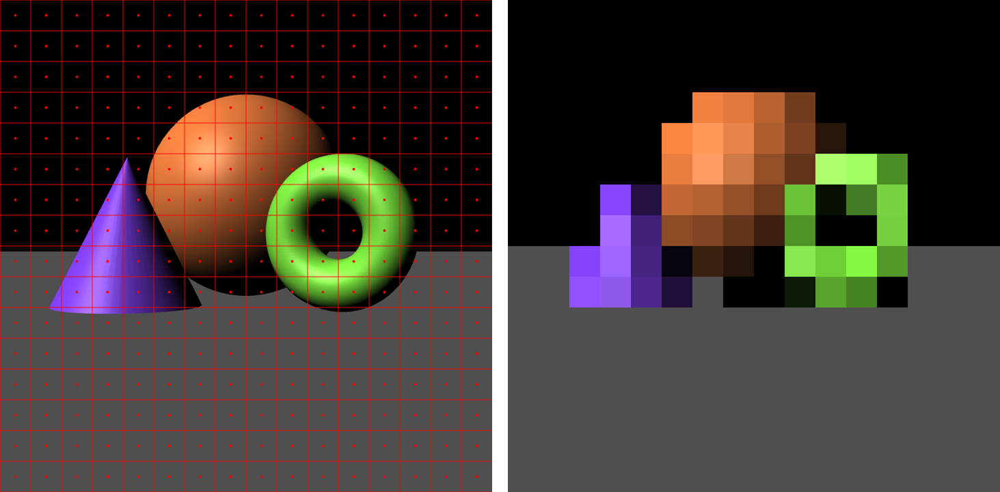
Figure 2.4 The continous image of the 3D scene on the left is sampled to create a $16 \times 16$ raster image on the right. The color of each pixel is the color of the continous image under the red dot in the grid cell at the same position. We see that the raster image lacks the details of the source image and appears jaggy. This problem is called "aliasing," and we will come back to discuss it later in the book.
We can see that sampling a continous image throws away a lot of information because we ignore the colors all the other points that are not in the rectangular grid. This loss of information can result in a common problem called "aliasing," and we will discuss it in great details in Chapter 18?.
Now that we know what images are, let us discuss their components.
Colors such as "red," "yellow," "blue," "black," etc. are different reactions of our visual system to different composition of light. There are a number of terms to unpack here. So let's do it one by one.
The eye is a part of our visual system. The innermost layer of the eye is called the retina, and it contains light-sensitive cells called photorecepters that act as our light sensors. It is only when light interacts with these cells that we perceive colors.
Light is made up of elementary particles called photons, and each photon has only one defining property: its wavelength. The wavelength uniquely determines the photon's energy. At any point in time, we can measure the number of photons that interact with a sensor per unit time. We can classify the photons according to their wavelengths, and we can find how much power (i.e., energy per unit time) each wavelength has by multiplying the number of photons at that wavelength with the energy of each photon. The graph of power versus wavelength is called a spectral power distribution (SPD). The SPD is what we mean by the "composition of light."
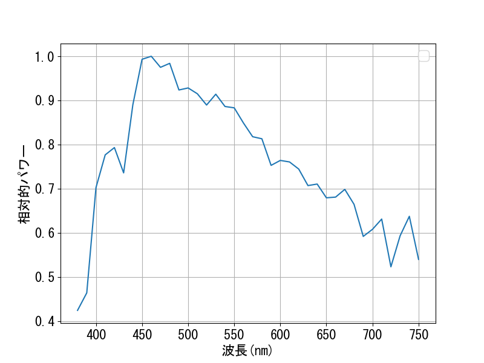
Figure 2.5 The spectral power distribution of "Illuminant 65," a light source defined by the International Commission on Illumination (CIE) to represent average daylight.
The human eyes are only sensitive to photons whose wavelengths are from about 380 to about 750 nanometers, and this range is called the visible spectrum. Two SPDs that have no differences inside the visible spectrum thus will look the same to humans. Different colors are caused by different SPDs. However, there are many cases where different SPDs are perceived as the same colors. These SPDs are called metamers.
We can use SPDs to represent color, but doing so is not such a good idea. First, there are infinitely many wavelengths in the visible spectrum, so a faithful representation of an SPD would need infinitely many numbers. We instead can devide the range into finitely many intervals and sample a number of each range. However, we would need several tens or hundreds number to be able to draw a graph like the figure above.
The good news is that we can represent colors much more economically. In computer graphics, how we represent colors with data is influenced by the trichomatic theory of color vision. It states that the human visual system does not sense the SPD as is but summarizes it into three numbers: the intensities of the colors red, green, and blue. All the other colors we can see result from different combinations of these three intensities.
The theory is supported by the types of photorecepters in the retina. There are two main types. The rod cells are sensitive to brightness but cannot sense colors and so are mainly useful for vision in low light conditions (for example, in the night). On the other hand, the cone cells can sense color but only work well when there is enough light. There are three different types of cone cells. One type is more sensitive to wavelengths which we generally perceive as "red." Another type is more sensitive to "green" wavelengths, and the last to the "blue" wavelengths. The three color intensities thus correspond to the responses of the three cone cell types.
The theory also influences how computer and TV screens are made. In cathode-ray tube (CRT) and liquid-crystal display (LCD) monitors, a screen is divided into small square areas, each corresponding to a pixel. Each of such areas would contain tiny parts that can be controlled to emit different amount of red, green, and blue light. Different colors can then be created by varying the intensities and letting the lights be mixed by the human eyes.
Following the trichomatic theory, we represent a color with three numbers $R$, $G$, and $B$, which stand for the intensity of the red, green, and blue colors, respectively. Each number of typically called a channel or a tristimulus value.
Each channel has values in the range $[0,1]$. The value $1$ indicates the highest intensity of the corresponding color that a display device can output, and the value $0$ indicates the absence of that color. We will denote a color, represented this way, by a 3-tuple $(R,G,B)$. The set $\mathcal{C}$ of all such colors is thus the set of 3-tuples whose elements are from $[0,1]$. In other words, $$\mathcal{C} = \{ (R,G,B) : R, G, B \in [0,1] \} = [0,1] \times [0,1] \times [0,1] = [0,1]^3.$$ This set is also sometimes called the RGB color cube.
Based on the meaning of $0$ and $1$ above, we have that $$ \begin{align*} (0,0,0) & \qquad \mathrm{corresponds\ to} \qquad \mathrm{the\ darkest\ black}, \end{align*} $$ that a display device can produce because it is not supposed to emit any light.2 We also have that $$ \begin{align*} (1,0,0) & \qquad \mathrm{corresponds\ to} \qquad \mathrm{the\ brighest\ red}, \\ (0,1,0) & \qquad \mathrm{corresponds\ to} \qquad \mathrm{the\ brighest\ green,\ and} \\ (0,0,1) & \qquad \mathrm{corresponds\ to} \qquad \mathrm{the\ brighest\ blue}. \end{align*} $$ If we add the above three colors together, we get following 4 derivative colors: $$ \begin{align*} (1,1,0) & \qquad \mathrm{corresponds\ to} \qquad \mathrm{the\ brighest\ yellow}, \\ (1,0,1) & \qquad \mathrm{corresponds\ to} \qquad \mathrm{the\ brightest\ magenta}, \\ (0,1,1) & \qquad \mathrm{corresponds\ to} \qquad \mathrm{the\ brightest\ cyan, and} \\ (1,1,1) & \qquad \mathrm{corresponds\ to} \qquad \mathrm{the\ brightest\ white.} \end{align*} $$ These eight colors are those that correspond to the corners of the RGB color cube. The exact colors that you see depends on the display device, but they usually agree with the colors in the diagram below.
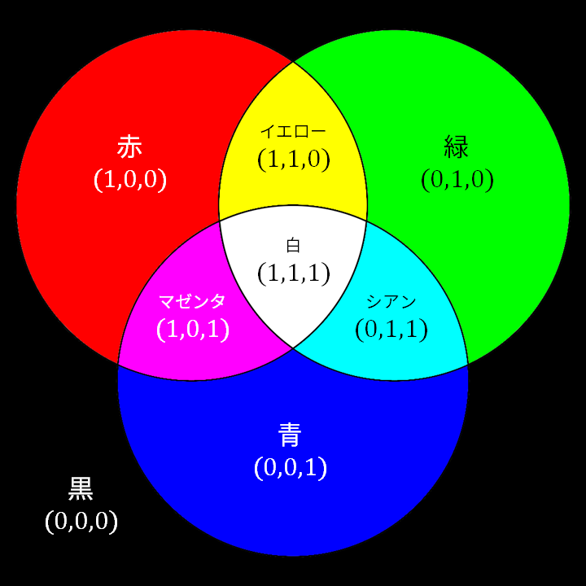
Figure 2.6 The eight colors at the corners of the RGB color cube.
We learned that a color is typically represented by three numbers in the range $[0,1]$. While this simplifies the representation significantly, it is not the end of the story because we will have to decide how to represent each such number.
In this book, we will be using different representations for tristimulus values. The float representation represent a tristimulus value with a single-precision floating point number. This data type is called "float" in most programming language. Because a float has the size of 4 bytes, a color takes 12 bytes to store in this represention. This representation allows us to freely perform calculations on the color values because a float supports almost all mathematical operations. However, using 4 bytes to represent just a single value takes much more space than the next approach. So, we will only use this representation for intermediate values as we peform calculation on colors.
The byte representation represents a tristimulus value with an 8-bit integer. This data type is called "char" or "byte" in most programming languages. A byte has 256 possible integer values: $0, 1, 2, \dotsc, 254, 255$. We map these values to real numbers in the range $[0,1]$ straightforwardly: $$\mathrm{the\ integer}\ k\ \mathrm{maps\ to\ the\ real\ number}\ \frac{k}{255}.$$ So, in this representation, 0 maps to 0.0, 255 maps to 1.0, and 127 maps to $\frac{127}{255}$, which is close to 0.5. This representation is 4 times smaller than the last one, and so is more suitable to store images in files. Because a color can be represented with 3 bytes, an image of size $W \times H$ can be represented with $W \times H \times 3$ bytes of data while the previous approach would need $W \times H \times 12$. In fact, file formats such as JPEG, PNG, and BMP are ways to store this image representation, and they differ in how they compress the data.
The drawback of the byte representation is that it is hard to calculate with. A byte does not support floating-point division. Moreover, addition, subtraction, and multiplication can easily lead to values that are outside of the $[0,255]$ range, which cannot be stored in a byte. As a result, when performing calculation on images stored in the byte representation, it is typical to convert each byte to a float, perform calculation on the float, clamp the result to the range $[0,1]$, and then covert this back to a byte and store it.
In the last section, we committed to representing a color with a point in the RGB color cube, and we also learned what colors that the 8 corners of the cube represent. However, we have not at all specified how to interpret any tristimulus value that is neither $0$ or $1$. One of the confusing things in computer graphics is that there are multiple ways to do this, and each leads to a different color space, which means the mapping from the RGB color cube to the actual color outputted by a display device. There are three common color spaces, so let's learn about them.
Among the three color spaces, the linear color space is the easiest to understand. In the space, what a tristimulus value represents is light power. The value $0$ means (ideally) no power. The value $1$ means the maximum light power that a pixel on a device can output for that channel. Let us call the maximum powers for the three channels $P^R_{\max}$, $P^G_{\max}$, and $P^B_{\max}$. When the channel is not specified, let us denote the maximum power with just $P_{\max}$.
In the linear color space, the tristimulus value $x \in [0,1]$ means light with power $P_{\max} x$. So, the value $0.5$ has half the power of 1, the value $0.25$ has 25%, and $0.9$ has 90%.
The function that maps a tristimulus value to the light power that a device outputs is called the transfer function. The space is called "linear" because the transfer function is a linear. Mathematically, consider function $f: A \rightarrow \mathbb{R}$ where $A$ are subsets of the real numbers. ($A$ is $[0,1]$ in our case.) We say that the function is linear if the following properties are satisfied:
The transfer function of the linear color space is just $$f(x) = P_{\max}x,$$ which is obviously linear.
We care about the linear color space because
all calculation with colors should be performed in the linear space.
This is because the linear color space is the only space where addition and multiplication make intuitive sense. Doing calculation in the linear space is also equivalent to performing calculation on light power. From physics, we know that light power is linear. If we combine a light beam with power $P_1$ with another with power $P_2$, their combined power is $P_1 + P_2$. If we scale a light beam with power $P$ by a scalar factor of $c$, either by blocking it or adding several copies of the same light source, the power of the resulting beam is $cP$. Calculation in the linear color space is correct physically, and being physically correct is important because, after all, colors come from light, a physical concept.
The transfer function for the gamma color space is $$f(x) = P_{\max} x^\gamma$$ for some positive constant $\gamma$. The graph below shows the transfer functions for some common gamma values. Notice that, when $\gamma = 1$, the gamma color space becomes the linear space.
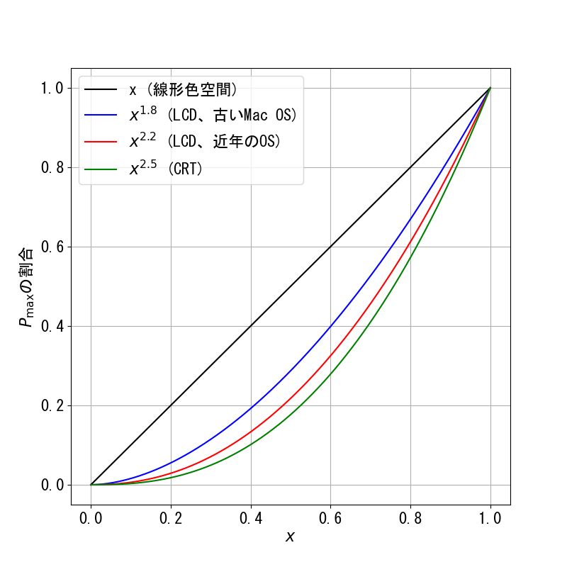
Figure 2.7 Transfer functions of some gamma color spaces.
Historically, the gamma color space comes from the fact that the transfer functions for CRT displays are well approximated by the transfer function above with $\gamma$ between $2.35$ and $2.55$.3 The most commonly used number is $2.5$.4 If we send the tristimulus value of value $0.5$ to a typically CRT display, it would emit light that is $0.5^{2.5} \approx 0.18$ times as powerful as the brightest light that the device can emit. In general, for any given tristimulus value except $0$ and $1$, a CRT device would display a darker color than what that color would be in the linear color space. This effect can be seen in the following image.
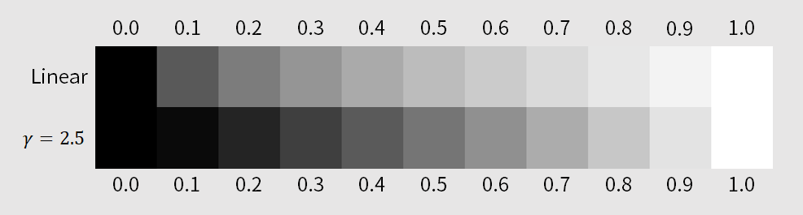
Figure 2.8 The difference between colors that correspond to the same tristimulus values between the linear color space and the gamma color space with $\gamma = 2.5$. Notice that colors in the gamma color space appear darker than the corresponding ones in the linear space.
In computer graphics, we do all calculations in the linear color space as noted earlier. The resulting tristimulus values would indicate the light powers that the viewer should receive. Thus, we need to make the display device emit lights with these powers. In order to make a CRT device do so, we have to perform gamma correction on the tristimulus values before sending them to the monitor. This means that we raise the values to the power of $1/\gamma$ to cancel the raising by the power of $\gamma$ that the device automatically does . For example, to make a CRT display emit light that has half the power of $P_{\max}$, we send $0.5^{1/2.5} = 0.5^{0.4} \approx 0.76$ to the monitor instead.
To imitate CRT displays, LCD displays are created to have non-linear transfer functions as well even though the underlying technology is different. When using an LCD monitor, the standard gamma value is $2.2$ when using all modern OSes. However, for Mac OSes before Snow Leopard, the value was 1.8.5 When the monitor type and the OS are unknown, we default to $2.2$.
The standard RGB (sRGB) color space was developed by Microsoft and HP and was adopted as a standard by the International Electrotechnical Commission (IEC) in 1999. It is the color space used in HTML documents6, Moreover, a browser would assume that all tristimulus values in an image file are in sRGB if the image does not come with any color space information. In particular, it is safe to say that most JPEG and PNG images use sRGB. We care about the space because we will use it extensively: we will be doing 3DCG in the web browser, and we will process a lot of image data.
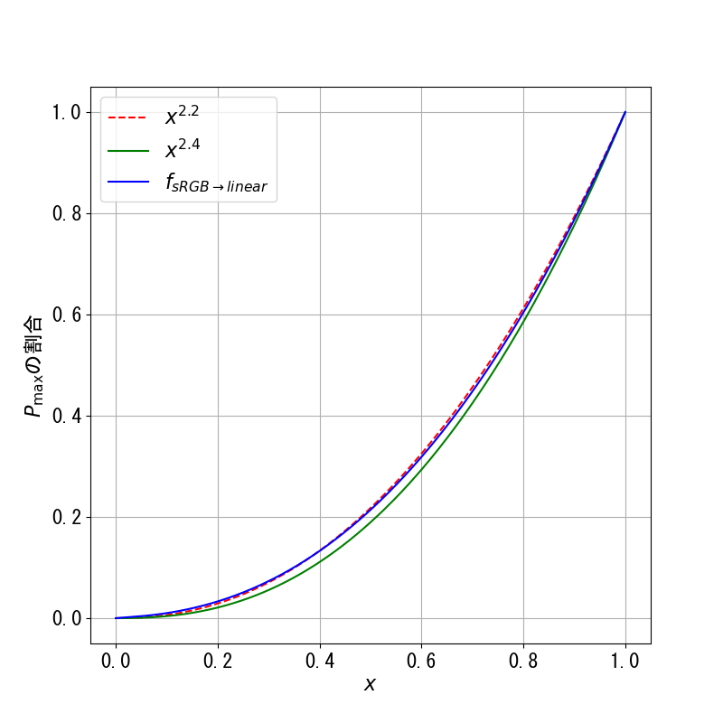
Figure 2.9 The graph of $f_{\mathrm{sRGB}\rightarrow \mathrm{linear}}(x)$, $x^{2.2}$, and $x^{2.4}$. Notice that $f_{\mathrm{sRGB}\rightarrow \mathrm{linear}}(x)$ is closer to $x^{2.2}$ than $x^{2.4}$ even though its formula contains the exponent $2.4$.
Similar to what is done with the gamma color space, we need to perform "gamma correction" on any tristimulus value by applying the function $$ f_{\mathrm{linear}\rightarrow\mathrm{sRGB}}(x) = \begin{cases} 12.92 x, & x \leq 0.0031308 \\ 1.055x^{1.0/2.4} - 0.055, & x > 0.0031308 \end{cases} $$ before sending the value to a display device that uses the sRGB color space or when writing the value to an image file, especially in the JPEG or PNG format. The function is the inverse of $f_{\mathrm{sRGB}\rightarrow\mathrm{linear}}(x)$ and is well approximated by $x^{1/2.2}$.
Display devices use non-linear color spaces because of historical reasons. However, we have not seen a clear reason why image files should use sRGB by default. Because we can show an image on all kinds of monitors, wouldn't it be more convenient to store image data in the linear color space and then perform the appropriate gamma correction at displaying time? Why do we need to do gamma correction before saving an image file at all?
The reason is that the human visual system's response to light power is non-linear. That is, when we see light that is $50%$ as powerful as a reference, it does not mean that we see it as $50%$ as bright. By pure coincidence, it turns out that the graph perceived brightness versus light intensity is quite close to that of $x^{1/2.5}$, the function that we use to gamma correct for the CRT monitor.7 Consequently, the gamma color space with $\gamma = 2.5$ is roughly perceptually uniform: change in the tristimulus value roughly corresponds to change in perceived brightness. The color represent by the tristimulus value $0.5$ would appear half as bright as the color represented by $1.0$. However, the light power that corresponds to $0.5$ is only $0.5^{2.5} \approx 18%$ of the light power that corresponds to $1$.
The consequence of the non-linear response is that humans are much better at distinguishing between levels of brightness when the color is dark than when the color is bright. As a result, it is much better to allocate more values to represent dark colors than to represent bright ones. This is especially important when we use the byte representation of color where we only have 256 different integers that can be used to encode levels of brightness. The CRT gamma space would give us a perceptually uniform encoding where the brightness change from Level $0$ to Level $255$ is divided roughly equally among the available $255$ steps.
Now, the sRGB color space is approximately the gamma color space with $\gamma = 2.2$. It is not exactly the CRT gamma color space, but it will do similar things to the byte representation. More integers will be used to encode dark color values, and the changes of brightness between consecutive levels will be more or less evenly distributed. The linear color space, on the other hand, would yield large jumps between two dark color levels, and this can manifest in non-smooth transitions in dark regions of images. (See Figure 2.10.) In conclusion, the benefit of saving image data in sRGB is that it is a way to encode brightness levels that is in line with how the human visual system works.
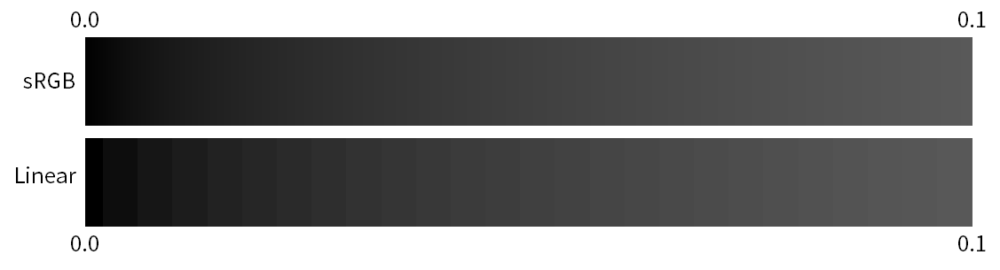 Figure 2.10 When using one byte to represent tristimulus values, the linear color space yields non-smooth transitions in dark regions that can be very easy to notice. On the other hand, because the sRGB color space results in many different values being used to encode dark colors, the transitions are much smoother.
Note, though, that the float representation can represent so many brightness levels that the color space we use becomes irrelevant. There is no harm in storing linear tristimulus values as floating point numbers.
Given the roles of different color spaces, our rule of thumb for dealing with colors are as follow.
There are two main types of mathematical operations we perform on colors: scaling and addition. These calculations must be performed in the linear color space because other spaces do not make sense physically.
For scaling, we multiply a color with a non-negative real number. What to do is to multiply the real number with each of the color's channels. In other words, if $\mathbf{c} = (c_R, c_G, c_B) \in \mathcal{C}$ is a color and $k \in [0,\infty)$, then $$ k\mathbf{c} = k(c_R, c_G, c_B) = (k c_R, k c_G, k c_B).$$ For example, if we multiply the color $(1,0,0.5)$ with $0.7$, we would get $(0.7,0,0.35)$.
Addition is taking two colors and adding their correponding channels together. That is, if $\mathbf{a} = (a_R, a_G, a_B)$ and $\mathbf{b} = (b_R, b_G, b_B)$, then $$ \mathbf{a} + \mathbf{b} = (a_R, a_G, a_B) + (b_R, b_G, b_B) = (a_R + b_R, a_G + b_G, a_B + b_B).$$ For example, $(0.1,0.2,0.3) + (0.5,0.4,0.3) = (0.6,0.6,0.6)$.
One thing to watch out for is overflow. After a calculation, a tristimulus value can become more than $1$, which means that the result is not a valid color. The rule of thumb for dealing with overlow is as follows.
Let the values overflow until the very last step where the color is outputted to a display device or saved to an image. At which point, clamp each tristimulus value to the range $[0,1]$ and then gamma correct it.
The rationale for the rule is that calculation on colors is just a proxy for calculation on light power. Light power can be arbitrarily large, and there's no reason for it to be bounded by the value $1$, which just represents the maximum power that a display device can output. However, we cannot control a display device with a tristimulus value outside the range $[0,1]$. So, before doing so, we must take the value back to the range by setting it to $1$ if it is more than $1$.
Allowing the channels to overflow until the very last step means that all intermediate values should be stored with floating point numbers, which can easily store values larger than $1$. On the other hand, the byte representation that we discussed earlier does not support values larger than $1$ at all.
What we often do in computer graphics is combining two images into one. One of the most common operation is called alpha compositing or alpha blending. Here, we have two (raster) images: the background image $B$ and the foreground $F$. Both have the same resolution of $W \times H$. We also have a map $$\alpha: {0,1,\dotsc,W-1} \times {0,1,\dotsc,H-1} \rightarrow [0,1],$$ called the alpha map that indicates how transparent each pixel of $F$ is. The idea is to lay $F$ on top of $B$, and $\alpha$ would indicate the fraction of $F$'s pixel to use. In particular,
In general, the output image $O$ is defined as $$ \begin{align*} O[i,j] = \alpha[i,j] \times F[i,j] + (1 - \alpha[i,j]) \times B[i,j] \end{align*} $$ for all $i \in {0,1,\dotsc,W}$ and $j \in {0,1,\dotsc,H}$. The scaling and addition of colors are as defined in the last section. Figure 2.11 shows an example of alpha blending. We can see that the operation is very useful because it allows us to cut an object from one image and paste it to another.
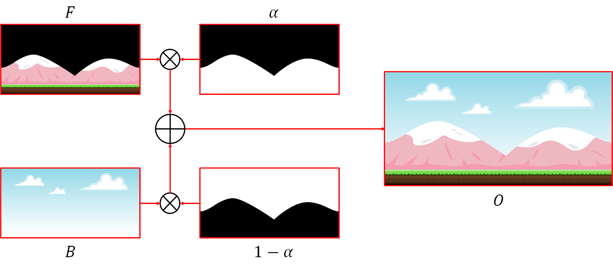
Figure 2.11 An example of alpha blending. Here, we cut a foreground object (mountain and ground) from a image and paste it on top of a sky background to construct a complete scene. The images are public domain andz come from https://opengameart.org/content/bevouliin-free-mountain-game-background.
To faciliate alpha blending, we often store the alpha map together with an image as a single unit. In this case, we can think of each pixel as having four channels instead of three. In particular, a pixel is now a 4-tuple $(R,G,B,A)$ where the first three numbers are the tristimulus values, and the number $A \in [0,1]$, called the alpha channel, indicates the transparency of the pixel. As a result, a pixel takes 16 bytes of storage if we use the floating point representation and 4 bytes if we use the byte representation. We may then say that the image is an "RGBA image" or is in the "RGBA format" instead of just using the word "RGB." Different image file formats have different supports for the alpha channel. For examples, PNG supports it, but JPEG does not.
Because the alpha channel is not a part of a color, it must be dealt with differently from the tristimulus values.
We allow a tristimulus value to overflow until the last outputting step. However, the alpha channel must always be in the range $[0,1]$. Typical calculations (we will discuss this shortly) will not take the value outside the range, so we rarely have to do anything special. If we were to be extra careful, though, we can clamp the alpha value to $[0,1]$ after each calculation.
We can apply non-linear functions such as $f_{\mathrm{sRGB}\rightarrow\mathrm{linear}}$ and $f_{\mathrm{linear}\rightarrow\mathrm{sRGB}}$ to transform a tristimulus value from one color space to another. We must not do so to the alpha channel. After all, there is no notion of "alpha spaces" that we can move between. This means that, when dealing with image files, alpha values should be loaded and saved as they are, without any special transformations or conversions. In other words, only apply gamma correction to $R$, $G$, and $B$. Never do so to $A$.
If we were to write the process of alpha blending introduced in the section before the last as a function in a fictional programming language, its signature would be as follows.
RgbImage alphaBlend(RgbImage F, RgbImage B, AlphaMap alpha)
This means that alpha mapping is a process that takes in two RGB image and an alpha map and produce a new RGB image. However, in the last section, we just defined a new data type, the RGBA image, that we said should facilitate alpha blending. However, there is a problem because, if we use RGBA images to perform alpha blending, we would get an RGB image as an output. This is not convenient because we seem to be losing the alpha channel. We'd rather get an RGBA image from the process because the result can be readily be used in further alpha blending operations. In other words, the function signature that involves RGBA images should be:
RgbaImage alphaBlend(RgbaImage F, RgbaImage B)
Note that the process does not take in an alpha map because they are now available in the RGBA images.
The process for alpha blending two RGBA images together is similar to the process we discusssed before. Let $\mathbf{f} = (f_R, f_G, f_B, f_A)$ be a pixel from the foreground image that is to be combined with the background pixel $\mathbf{b} = (b_R, b_G, b_B, b_A)$. Let $\mathbf{o} = (o_R, o_G, o_B, o_A)$ denote the output pixel. Then, the components of $\mathbf{o}$ are defined as follows. $$ \begin{align*} o_A &= f_A + (1 - f_A) b_A \\ (o_R, o_G, o_B) &= \frac{f_A}{o_A}(f_R, f_G, f_B) + \bigg( 1 - \frac{f_A}{o_A} \bigg) (b_R, b_G, b_B) \end{align*} $$ We start the process by combining the two alpha values to the new one. The idea is that we think of an alpha value of a pixel as indicating how much the pixel's area is covered by its color. For the foreground image, a fraction of $f_A$ of the pixel is covered, and a fraction of $1 - f_A$ can be seen through. In the see-through portion, we can see the background pixel, and a fraction of $b_A$ of its area is covered, so there an extra fraction of $(1 - f_A)b_A$ that is covered by the background pixel. The total coverage is thus $f_A + (1 - f_A)b_A$.
Then, we use the output alpha value $o_A$ to form a new alpha map by computing $\alpha = f_A / o_A$. We then use this alpha map to alpha blend the foreground pixel and the background pixel together. The rationale for this is that the area of the pixel that is covered by both the foreground and background image is $o_A = f_A + (1-f_A)b_A$. In this area, the foreground is responsible for a fraction of $f_A / o_A$, and the background is responsible for a fraction of $(1 - f_A)b_A / o_A = 1 - f_A / o_A$. Hence, the colors should be combined by these fractions.
One thing to be careful about with the calculation above is that, when $f_A$ and $b_A$ are both zero, then $o_A$ would be zero. This means that computing $f_A / o_A$ would cause a division by zero error or would result in a NaN (Not a Number) value. There are two ways to avoid these problems.
Another problem that we have with an RGBA image is that we have not specified how to properly display it. The obvious way of taking the RGB portion and display it does not work because the color channels do not contain any information about the pixel's transparency so it will almost always appear brighter than what we would expect. For example, consider a pixel with RGBA values of $(1,0,0,0.5)$. If we display the RGB portion directly, we would see the color $(1,0,0)$, which is bright red. However, the pixel is $50\%$ transparent, so we would actually expect a much dimmer color.
The exception to the above concern is when a pixel is opaque; that is, when the alpha channel is $1$. In this case, the RGB portion is the color that we would expect to see.
The above reasoning leads us to the following conclusion.
We cannot display an RGBA image directly. We must alpha blend it with an opaque background first. Only then, we can take the RGB portion of the result and display it.
An opaque background is an RGBA image used as a background such that all of its alpha values are $1$. A nice property of an opaque background is that, when alpha blended with any foreground, the resulting image will be opaque. This is because, when $b_A = 1$, we have that $o_A = f_A + (1 - f_A) = 1$.
This conclusion should already be familiar to us. In image editing software such as Adobe Photoshop, an RGBA image would be drawn on top of a checkerboard pattern to indicate which part of the image is transparent or translucent. When a web browser displays a PNG image with transparency, it always alpha blend the image with the background of the document first.
So far, all the channels of an RGBA image are completely independent of one another. As a result, the RGB channels do not contain any information about the alpha channel and vice-versa. This way of storing an RGBA image is called the unassociated alpha or straight alpha, and it is used by the PNG file format.8 A disadvantage of an RGBA image with unassociated alpha is that we must perform a division by $o_A$ in every alpha blending. This can lead to numerical difficulty as we have noted before.
One way to avoid the difficulty above is to store in RGB channels the color that has already been scaled by the alpha channel. In other words, instead of storing $(R,G,B,A)$, we store $(AR, AG, AB, A)$ instead. Here, the alpha channel is multiplied to the color channels beforehand. This is why this representation is called premultiplied alpha.
To see why premultiplied alpha let us avoid the numerical difficulty in alpha blending. Consider the process of blending a foreground pixel $(f_R, f_G, f_B, f_A)$ with a background pixel $(b_R, b_G, b_B, b_A)$ to obtain an output pixel $(o_R, o_G, o_B, o_A)$. Let the premultiplied alpha versions of these pixels be denoted as follows. $$ \begin{align*} (f'_R, f'_G, f'_B, f_A) &= (f_A f_R, f_A f_G, f_A f_B, f_A) \\ (b'_R, b'_G, b'_B, b_A) &= (b_A b_R, b_A b_G, b_A b_B, b_A) \\ (o'_R, o'_G, o'_B, o_A) &= (o_A o_R, o_A o_G, o_A o_B, b_A). \end{align*} $$ We have that $$ \begin{align*} (o'_R, o'_G, o'_B) &= o_A(o_R, o_G, o_B) \\ &= o_A \bigg[ \frac{f_A}{o_A} (f_R, f_G, f_B) + \bigg(1 - \frac{f_A}{o_A} \bigg)(b_R, b_G, b_B) \bigg] \\ &= o_A \bigg[ \frac{f_A}{o_A} (f_R, f_G, f_B) + \frac{(1 - f_A)b_A}{o_A} (b_R, b_G, b_B) \bigg] \\ &= f_A (f_R, f_G, f_B) + (1 - f_A) b_A (b_R, b_G, b_B) \\ &= (f'_R, f'_G, f'_B) + (1 - f_A) (b'_R, b'_G, b'_G). \end{align*} $$ As a result, performing alpha blending on RGBA images with premultiplied alpha is much simpler. The equations are: $$ \begin{align*} o_A &= f_A + (1 - f_A) b_A, \\ (o'_R, o'_G, o'_B) &= (f'_R, f'_G, f'_B) + (1 - f_A) (b'_R, b'_G, b'_G). \end{align*} $$ Notice that the equations are similar in form, and, more importantly, there is no division, so we do not have to worry about division by zero at all.
Another advantage of premultipled alpha is that it is more compatible with the blending functionality that WebGL provide. We will revisit this issue later in Chapter 20?.
Premultiplied alpha has a drawback that information can be lost when we multiply the alpha channel to the color channels. Theoretically, when the alpha channel is zero, the original values in the color channels are lost. This should not be an issue in practice because we do not care about colors of transparent pixels. A practical issue comes up when there is limited storage, especially when we use only one byte to represent each channel. Premultiplying with alpha causes the color values to become smaller, forcing them to be represented with fewer bits than the original color values. The loss of information can be so great that the original color values cannot be recovered after division by the alpha channel. This is the reason why the PNG file format uses unassociated alpha instead of premultiplied alpha.
We shall prefer premultiplied alpha over unassociated alpha because (1) it makes programming easier, and (2) it is more compatible with WebGL. However, we must be careful because we will be loading data from PNG images. As a result, we must follow the rules below.
Computer graphics programs can instruct a robot to draw pictures with a pen, but we will not cover such programs in this book.
Real display devices, however, may emit some light even thought it is instructed not to emit anything. For example, LCD works by blocking light generated by a special light source behind its panel. This blocking is not perfect as you can often tell an LCD monitor that is turned off from one that is on but displays a black image.
Charles Poynton. The rehabilitation of gamma. https://poynton.ca/PDFs/Rehabilitation_of_gamma.pdf. Accessed: 2022/08/16.
PNG Specification: Gamma Tutorial. https://www.w3.org/TR/PNG-GammaAppendix.html. Accessed: 2022/08/16.
Accurate Gamma 2.2 And Pre-set 5 Gamma Settings. https://www.viewsonic.com/es/colorpro/articles/detail/accurate-gamma_424. Accessed 2022/08/16.
World Wide Web Consortium. CSS Color Module Level 3. https://www.w3.org/TR/css-color-3/, 2022. Accessed: 2022/08/16.
Charles Poynton. Frequently Asked Questions about Gamma. http://poynton.ca/GammaFAQ.html, 1998. Accessed: 2022/08/17.
PNG (Portable Network Graphics) Specification Version 1.0. https://www.w3.org/TR/PNG-Rationale.html#R.Non-premultiplied-alpha. Accessed: 2022-08-24.
{kind=link}
{kind=link}
{kind=link}
{kind=link}
{kind=link}
{kind=link}
{kind=link}
{kind=link}
{kind=link}
{kind=link}
{kind=link}